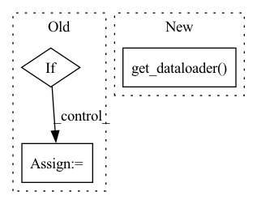

Pattern ID :16483

Before Change
def attack(self, epoch: int, save=False, get_data="self", loss_fn=None, **kwargs):
if isinstance(get_data, str) and get_data == "self":
get_data = self.get_data
if isinstance(loss_fn, str) and loss_fn == "self":
loss_fn = self.loss_fn
self.model._train(epoch, save=save,
validate_func=self.validate_func, get_data=get_data, loss_fn=loss_fn,
save_fn=self.save, **kwargs)
After Change
poison_input = self.add_mark(_input)
poison_dataset = MyDataset(poison_input, _label)
dataset = torch.utils.data.ConcatDataset([clean_dataset, poison_dataset])
loader = self.dataset.get_dataloader("train", dataset=dataset)
self.model._train(epoch, save=save,
validate_func=self.validate_func, loader_train=loader,
save_fn=self.save, **kwargs)
elif self.train_mode == "loss":
In pattern: SUPERPATTERN
Frequency: 3
Non-data size: 3
Instances
Fragment ID: 55413036
Project Name: ain-soph/trojanzoo
Commit Name: 0c55cafd1c6ebb4c9b410b79810687356f19d009
Time: 2020-11-02
Author: ain-soph@live.com
File Name: trojanzoo/attack/backdoor/badnet.py
M Class Name: BadNet
N Class Name: BadNet
M Method Name: attack(3)
N Method Name: attack(5)
M Parent Class: Attack
N Parent Class: Attack
M File Name: trojanzoo/attack/backdoor/badnet.py
N File Name: trojanzoo/attack/backdoor/badnet.py
M Start Line: 49
M End Line: 56
N Start Line: 52
N End Line: 72
'>
Before Change
_input, _label = self.model.get_data(data)
layer_output = self.model.get_layer(_input, layer_output=self.preprocess_layer)
layer_output = layer_output.view(1, -1)
if i == 0:
layer_output_all = layer_output
else:
layer_output_all = torch.cat((layer_output_all, layer_output))
After Change
class_input = torch.stack(class_input)
class_label = torch.as_tensor(class_label, dtype=torch.long)
class_dataset = TensorDataset(class_input, class_label)
class_dataloader = self.dataset.get_dataloader(mode="train", dataset=self.class_dataset, num_workers=0)
layer_output_all = [] // TODO
for i, data in enumerate(class_dataloader):
_input, _label = self.model.get_data(data)
'>
Fragment ID: 55413038
Project Name: ain-soph/trojanzoo
Commit Name: 4adb8ae3e90425855448bfd8fc212f8d91f5332c
Time: 2021-06-01
Author: ain-soph@live.com
File Name: trojanvision/defenses/backdoor/spectral_signature.py
M Class Name: SpectralSignature
N Class Name: SpectralSignature
M Method Name: get_clean_dataloader(1)
N Method Name: get_clean_dataloader(1)
M Parent Class: BackdoorDefense
N Parent Class: BackdoorDefense
M File Name: trojanvision/defenses/backdoor/spectral_signature.py
N File Name: trojanvision/defenses/backdoor/spectral_signature.py
M Start Line: 114
M End Line: 126
N Start Line: 113
N End Line: 125
'>
Before Change
T.RandomResizedCrop(self.hparams.train_crop_size),
T.PILToTensor()
])
if self.hparams.webdataset:
ds = (
wds.WebDataset(self.hparams.train_dir)
.decode(wds.imagehandler("pil"))
.to_tuple("jpg;jpeg;png cls")
.map_tuple(transform, lambda x: x)
.batched(self.hparams.batch_size)
)
dataloader = wds.WebLoader(ds, batch_size=None, shuffle=True, num_workers=self.hparams.num_workers, pin_memory=True)
else:
ds = ImageFolder(self.hparams.train_dir, transform=transform)
dataloader = DataLoader(ds, batch_size=self.hparams.batch_size, shuffle=True, num_workers=self.hparams.num_workers, pin_memory=True)
return dataloader
After Change
T.RandomResizedCrop(self.hparams.train_crop_size),
T.PILToTensor()
])
return self.get_dataloader(transform, training=True)
def val_dataloader(self):
transform = T.Compose([
T.Resize(self.hparams.val_resize_size),
'>
Fragment ID: 55413033
Project Name: gau-nernst/vision-toolbox
Commit Name: 1f1bcf016dec5e19148984855c8acdb2a9cb456b
Time: 2022-01-03
Author: gau.nernst@yahoo.com.sg
File Name: classifier.py
M Class Name: ImageClassifier
N Class Name: ImageClassifier
M Method Name: train_dataloader(1)
N Method Name: train_dataloader(1)
M Parent Class: pl.LightningModule
N Parent Class: pl.LightningModule
M File Name: classifier.py
N File Name: classifier.py
M Start Line: 97
M End Line: 113
N Start Line: 119
N End Line: 123